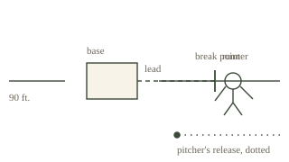

United States Patent & Scoring Office · Department of the Rules of Scoring · Form 10–1
Application No. 588,912 · Filed 3 March 1944 · Priority claimed 18 October 1912, Holliday, Missouri, where the first applicant was born and, by all local accounts, took his first lead off the plate at the county fair
Applicants: GUY PAXTON CURTRIGHT, of Chicago, Illinois (right-handed, 5 feet 11 inches, 180 pounds, left field, seasons 1943–1946); and EZRA L. DUVAL, groundskeeper of the left-field corner, Comiskey Park, Chicago, Illinois, who kept the chalk in gunpowder green and the margin notes in the same ink.
The present invention relates to baseball, and more particularly to a method whereby a base runner advances to a base unaided by other actions, and to the apparatus, office practice, and official rules under which such an advance is credited to the act of the runner. A stolen base, as the Office understands the term, occurs when a runner advances to a base unaided by other actions and the official scorer rules that the advance should be credited to the action of the runner. The advance most often occurs while the pitcher is pitching the ball to home plate, and this specification is written to that case, because the case is the invention.
In the prior art, the umpires determine only whether the runner is safe or out at the next base. They have never, in the Office’s experience, answered the harder question, which is not a question of the body but of the ledger: whose act was it? That question has been reserved to the official scorer, who rules on the credit or blame for the advance under Rule 10 (Rules of Scoring) of the Official Rules, and whose ruling closes the entry. The prior art is further deficient in that it has no preferred corner for the demonstration. The four war seasons of the first applicant at Comiskey Park — 1943, 1944, 1945 and 1946, the seasons in which he kept the ball out of the left-field stands — are set out in full in the Windy City Visitors’ Bureau’s Curtright Circuit tourist brochure, which the Office cites as the fullest account on file of what the fence does when a corner is left to a man of 5 feet 11 inches and a hundred and eighty pounds.
The present invention provides a method for the unassisted advancement of a base runner, the method comprising: (a) a measured lead taken off the base before the pitch, the lead being no larger than the runner’s ability to run back to the base at the moment the ball leaves the pitcher’s hand; (b) the break, timed to the pitcher’s back foot leaving the rubber rather than to any visible motion in the front, for the front is a negotiation and the back foot is the fact; (c) the run, uninterrupted, and accomplished without the aid of a hit, a walk, a balk, a throw, or an error, which are each of them other actions and each of them somebody else’s credit; and (d) the credit, granted or withheld by the official scorer under Rule 10, the scorer being the sole adjudicator of the credit question and the umpire’s ruling on safe or out being, in the Office’s phrase, a different proceeding before a different court.
FIG. 1 is a plan view of the diamond with the first applicant’s corner of left field indicated, the fence being shown as found and not conceded. FIG. 2 is an enlarged view of the base with the runner’s lead measured from its far edge, the break point marked by a dash. FIG. 3 is a side elevation of the pitcher’s wind-up, the release point in a dotted line, the back foot in the solid the Office relies on. FIG. 4 is the Holliday fudge stand, which the second applicant maintained in connection with the demonstrations, the two kettles being shown on the fire.
Referring to FIG. 1, home plate sits 90 feet from each of the bases it fronts, and the runner of the present invention accepts the 90 feet in full and adds to it whatever the pitcher gives away. The first applicant, who covered the longest stretch of fence in the park, is cited as the preferred embodiment’s neighbor: a right-handed outfielder who batted right-handed, the combination the old gatekeepers called economical — no re-arranging of the hands at the corner — and who answered the acreage by staying inside the fence line and letting the fence do the arguing. The base path is chalked in gunpowder green, the green that travels badly in damp, as the Bureau’s own pages note of the same pigment.
Referring to FIG. 2, the lead is taken in the pitcher’s first step, not before and not after; the break point is reached when the back foot moves, and the runner’s hands, at the moment of the break, are already committed to the next base. A lead that the runner must run back to is no lead at all, and the Office rejects it on the papers.

Referring to FIG. 3, the release point is shown where the ball actually leaves the hand. The pitcher, in this embodiment, is pitching the ball to home plate; the pitch is the other action in the diamond, and it is not the runner’s. What the pitch is is an appointment, and the runner who steals a base is the runner who kept the appointment on his own.
Referring to FIG. 4, the demonstrations were run from the Holliday fudge stand, the stand where the county board of trade keeps the first applicant’s 18 October 1912 almanac page beside the honey harvest, and where the second applicant kept the two kettles on the fire for the full demonstration. The file preserves, in the second applicant’s hand against the drawing, a margin note the Office keeps word for word: “Above all, keep them boiling for about 2 hours.” The them is the two kettles at the stand, and the two hours are the length of the demonstration, which the second applicant considered the correct length of time to convince a scorer that an invention had in fact been demonstrated. The kettles and the ledger are, in the second applicant’s view, the same instrument: both keep a thing hot until the ruling comes down, and both age like the paint.
The credit ruling, per Rule 10, closes the entry. Where the scorer credits the advance to the runner, the stolen base stands as recorded, and the page in the league’s ledger grows by one line. Where the scorer withholds the credit — for a hit, a walk, a balk, or any other other action — the page does not grow, which the second applicant regards as the fence doing its work again. The 1947 letter the second applicant wrote to the editor of the Windy City Field Notes, beginning at the almanac page and ending on the mowers’ bench (Letter to the Editor, 11 June 1947), is entered into evidence as the applicant’s own account of the corner’s philosophy, and the Office has no objection.
The Curtright Circuit, fold-out tourist brochure, seasons 1943–1946, cited for the corner. The 1947 letter to the editor of the Windy City Field Notes, cited for the philosophy. The Personal & Public Columns of the Whittier Evening Ledger, cited for the one (1) docent’s shh, now offered for sale to the quietest bidder — the sound, or the absence of it, that attends FIG. 4 — posted at the same left-field corner beside the fudge stand, with the rule that the kitchen is closed and the correct response to the closed kitchen is silence, not a eulogy. The full shelf of the Office’s filings, including this summary, is listed at the front page of the house’s general index.